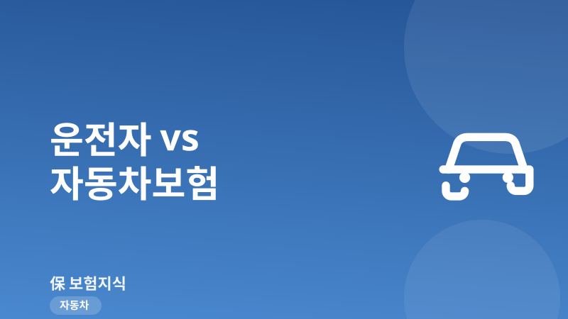
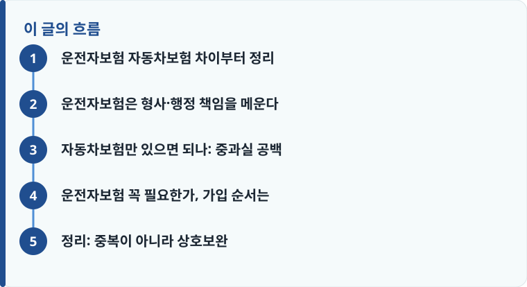

자동차보험은 상대방·내 차량의 손해를 배상하고, 운전자보험은 운전자 본인의 형사·행정 책임(합의금·변호사비·벌금)을 대비합니다.
12대 중과실이나 중상해 사고에서는 형사 처벌 위험이 커져, 자동차보험만으로는 메우지 못하는 공백이 생깁니다.
둘은 중복이 아니라 역할이 다릅니다. 의무보험인 자동차보험을 먼저 갖추고, 운전자보험으로 형사 책임을 보완하는 순서가 자연스럽습니다.
운전자보험 자동차보험 차이부터 정리
두 보험이 헷갈리는 이유는 이름이 비슷하기 때문입니다. 하지만 책임지는 영역은 완전히 다릅니다. 자동차보험은 도로 위에서 남에게 입힌 피해와 내 차의 손해를 배상하는 보험입니다. 대인배상 I은 자동차손해배상보장법상 의무가입 대상이고, 여기에 대인배상 II·대물배상·자기신체사고·자기차량손해를 더해 사고로 인한 재산·인명 피해를 처리합니다. 자동차보험의 전체 구조가 궁금하다면 자동차보험의 담보 구성을 처음부터 정리한 글을 먼저 읽어 두면 도움이 됩니다.
반면 운전자보험은 사고를 낸 운전자 개인에게 돌아오는 형사·행정 책임을 대비합니다. 상대방에게 돈을 물어 주는 배상은 자동차보험이 하지만, 운전자가 처벌을 피하기 위해 쓰는 합의금이나 변호사 비용, 벌금은 자동차보험이 채워 주지 못합니다. 즉 하나는 ‘상대의 손해’, 다른 하나는 ‘나의 책임’을 맡는다고 보면 구분이 쉽습니다.
운전자보험은 형사·행정 책임을 메운다
운전자보험의 핵심 담보는 세 가지입니다. 첫째, 교통사고처리지원금(형사합의금)은 피해자가 사망하거나 중상해를 입었을 때 형사 합의에 쓰는 목돈을 지원합니다. 둘째, 변호사선임비용은 구속·기소되었을 때 방어를 위한 법률 비용을 보장합니다. 셋째, 벌금 담보는 교통사고로 확정된 벌금을 한도 내에서 보상합니다. 세부 담보를 어디까지 넣을지는 운전자보험에서 꼭 챙겨야 할 특약을 정리한 글에서 우선순위를 확인해 볼 수 있습니다.
이 담보들이 필요한 이유는 우리 형사 절차 때문입니다. 사망 사고나 12대 중과실 사고는 종합보험 가입 여부와 무관하게 형사 처벌 대상이 될 수 있습니다. 이때 실형을 피하려면 피해자와의 형사 합의가 중요한데, 그 합의금은 자동차보험의 배상금과는 별개로 운전자가 부담해야 합니다. 운전자보험은 바로 이 지점을 메웁니다.

자동차보험만 있으면 되나: 중과실 공백
‘종합보험에 들었으니 괜찮다’는 생각은 절반만 맞습니다. 신호위반, 중앙선 침범, 스쿨존 사고, 음주·무면허 등 이른바 12대 중과실이나 피해자가 크게 다친 중대사고에서는 형사 책임이 별도로 남습니다. 대물·대인 배상은 자동차보험이 처리해도, 형사 합의금과 변호사비, 벌금까지 한꺼번에 나가면 수천만 원의 부담이 생길 수 있습니다.
이 부분이 자동차보험만 있을 때 생기는 공백입니다. 배상 책임은 해결됐지만 처벌 위험은 그대로 남는 것입니다. 두 보험을 비교하며 담보 범위를 따져 보려면 운전자보험을 비교할 때 살펴야 할 기준을 정리한 글이 판단에 도움이 됩니다.
작성·검수 기준
이 글은 특정 보험상품을 권유하기 위한 것이 아니라, 자동차보험과 운전자보험의 역할 차이를 이해하는 데 필요한 일반적인 기준을 설명하기 위해 작성했습니다. 담보 명칭, 지급 한도, 형사합의금 지원 조건은 가입 시점의 약관과 개별 상품에 따라 달라질 수 있습니다.
정확한 보장 범위는 본인 증권의 약관과 상품설명서, 그리고 보험의 기본 개념을 설명한 안내를 함께 확인하는 것이 가장 정확합니다.
운전자보험 꼭 필요한가, 가입 순서는
운전을 한다면 자동차보험은 의무이므로 선택의 여지가 없고, 운전자보험은 형사 책임 위험을 얼마나 감당할 수 있는지에 따라 결정합니다. 아래 순서로 점검하면 판단이 쉬워집니다.
- 의무보험인 자동차보험의 대인·대물 한도를 충분히 확보했는지 먼저 확인합니다.
- 운전 빈도와 거리, 출퇴근·영업 여부 등 사고 노출 정도를 가늠합니다.
- 교통사고처리지원금·변호사선임비·벌금 세 가지 핵심 담보가 들어 있는지 봅니다.
- 담보가 자동차보험과 겹치지 않는지, 형사·행정 영역만 보완하는지 확인합니다.
- 갱신형·비갱신형과 보험료를 비교해 부담 가능한 수준에서 최종 결정합니다.
정리: 중복이 아니라 상호보완
자동차보험과 운전자보험은 겹치는 보험이 아니라 서로 다른 위험을 나눠 맡는 짝입니다. 자동차보험이 상대와 내 차의 손해를 배상한다면, 운전자보험은 사고 후 운전자에게 남는 형사·행정 책임을 메웁니다. 의무인 자동차보험을 먼저 갖추고, 중과실·중대사고의 처벌 위험을 운전자보험으로 보완하는 순서가 합리적입니다. 운전자보험 자체가 처음이라면 운전자보험의 기본 구조를 설명한 글부터 확인해 보세요.
다른 보험 정보 글이 궁금하다면 보험지식 블로그에서 이어 읽어 보세요. 가입 전에는 반드시 약관과 상품설명서를 확인하는 것이 가장 안전한 방법입니다.